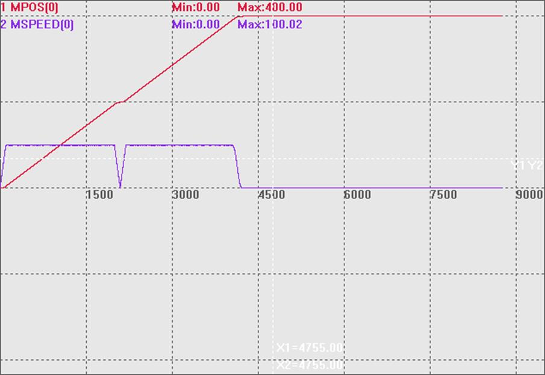
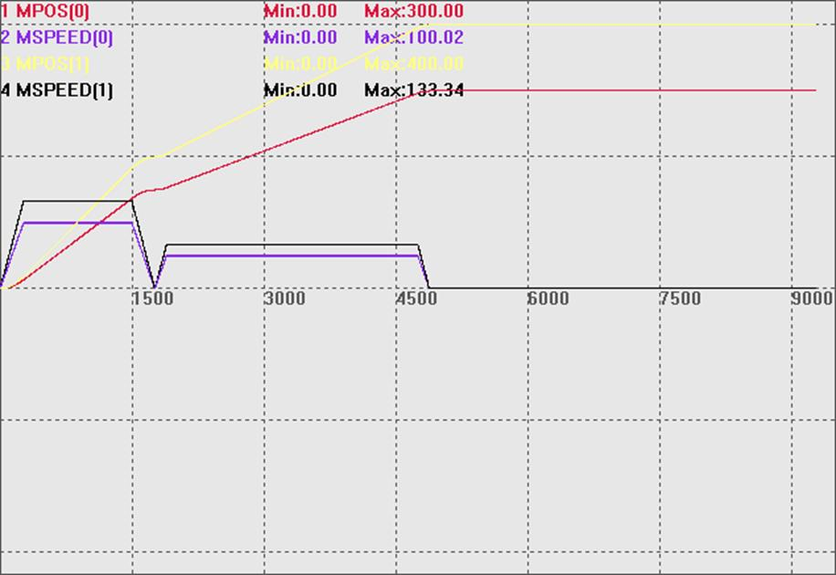
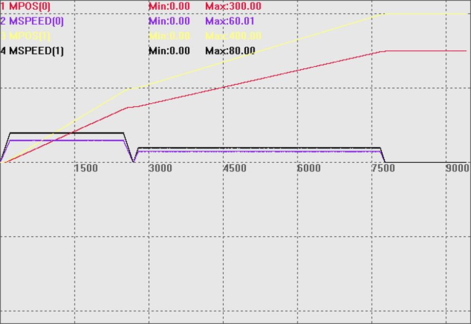

|
类型 |
特殊运动指令 |
|
描述 |
直线插补运动指令，用于点位运动。 不支持连续运动中速度前瞻，运动指令使用的各个轴的SPEED，速度参数会自动带入运动缓冲。 该指令不支持在线命令动态修改，但是可以使用SPEED_RATIO指令来调整速度；支持VP_MODE设置。 |
|
语法 |
MOVE_PTP(mode,dis1,dis2……) mode：模式: BIT0: 1-根据每个轴的速度加速度限制来计算和速度与和加速度。 BIT2: 1-预留。 dis1：第一个轴运动的距离，单位uints，支持小数。 dis2：第二个轴运动的距离，单位uints，支持小数。 |
|
适用控制器 |
4系列控制器，version_build 230510 以上版本。 |
|
例子 |
例一： '1模式单轴与vp_mode指令用例 rapidstop(2) trigger speed_ratio = 1 base(0) mpos = 0 dpos = 0 atype = 1 speed = 100 units = 100 accel = 1000 decel = 1000 vp_mode = 0 move_ptp(1,200) wait idle vp_mode = 6 move_ptp(1,200) MPOS(0)、MSPEED(0)垂直刻度200  例二： '1模式多轴与speed_ratio指令用例 rapidstop(2) trigger speed_ratio = 1 vp_mode = 0,0 base(0,1) mpos = 0,0 dpos = 0,0 atype = 1,1 speed = 100,200 units = 500,500 accel = 500,500 decel = 500,500 move_ptp(1,150,200) wait idle speed_ratio = 0.5 move_ptp(1,150,200) MPOS(0)、MSPEED(0)、MPOS(1)、MSPEED(1)垂直刻度200  例三： '0模式多轴与speed_ratio指令用例 rapidstop(2) trigger speed_ratio = 1 vp_mode = 0,0 base(0,1) mpos = 0,0 dpos = 0,0 atype = 1,1 speed = 100,200 units = 500,500 accel = 500,500 decel = 500,500 move_ptp(0,150,200) '0模式下与move指令效果一致 wait idle speed_ratio = 0.5 move_ptp(0,150,200) MPOS(0)、MSPEED(0)、MPOS(1)、MSPEED(1)垂直刻度200  |
|
相关指令 |